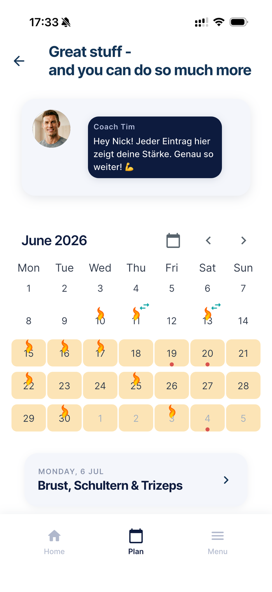
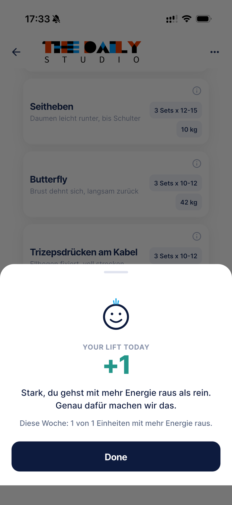
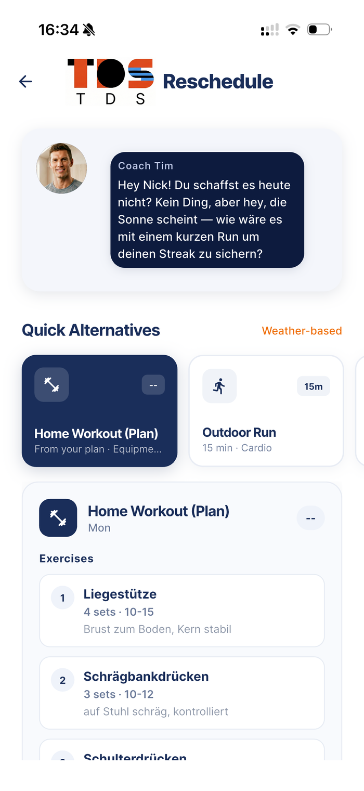
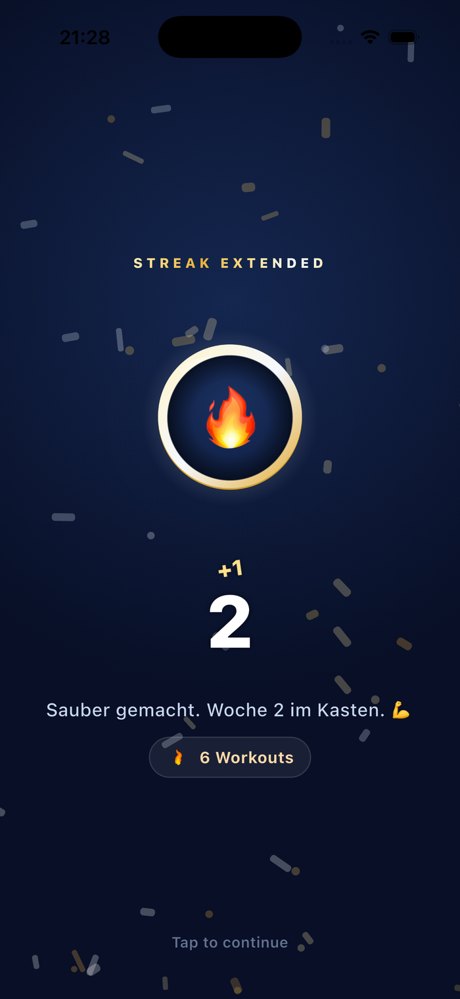

The Daily Studio ist der Coach, der diese Lücke schließt. Tim und Nina bauen dir einen Plan, der in deinem Studio-Netzwerk funktioniert, fangen dich auf, wenn das Leben dazwischenkommt, und machen spürbar, wie gut Bewegung tut. Kein Ranking, kein schlechtes Gewissen. Einfach dranbleiben.
Optimiert für USC, Wellpass & Hansefit.

Warum das hier anders ist
Wie bleibt man dran, wenn die Tage lang und der Kopf voll ist? Wie schafft man es über Monate, oder für immer? The Daily Studio ist dein Personal Trainer, der genau dafür antritt.
Intrinsische Motivation aufzubauen ist der Schlüssel. Er hilft dir nicht nur, dein Ziel zu erreichen und fitter zu werden, sondern lässt dich mit der Zeit selbst spüren, dass Bewegung gerade in schwierigen Momenten guttut und den Kopf frei macht.
So helfen wir dir, deine Ziele zu erreichen und deine Studio-Mitgliedschaft dauerhaft optimal zu nutzen. Und der eigentliche Trick: mit Nina und Tim baust du echte intrinsische Motivation auf, die dich ein Leben lang begleitet.
So funktioniert's
Du sagst, was du willst. Dein Coach macht den Rest und passt sich an, wenn das Leben dazwischenkommt.
Welches Ziel verfolgst du, was willst du tun, Workout im Gym oder gehst du in Kurse? Und wie oft willst du pro Woche trainieren?
Dein Coach baut dir einen Plan und erneuert ihn alle sechs Wochen, for best results. Das Beste: er achtet darauf, dass die Trainings dich besser fühlen lassen. Schaffst du's mal nicht ins Studio, kennt er deine Präferenzen und schlägt dir machbare Alternativen für zuhause oder draußen vor.
Über Streak und Awards bekommst du regelmäßig Feedback für deine Trainingsleistung. Und weil Sport zusammen am meisten Spaß macht, verbindest du dich mit Buddys und feiert Fortschritte gemeinsam.
Die Lift-Methode
Nach dem Training gibt es einen kurzen Recall: Du sagst, wie's dir vorher ging, und wie es dir jetzt danach geht. Der Unterschied ist dein Lift-Score.
Genau dieses Gefühl ist der eigentliche Lohn, der dir hilft, selbst zu spüren, dass Bewegung dir guttut, nicht die Zahl auf einer Rangliste. Und je öfter du es merkst, desto leichter fällt das Dranbleiben, gerade an den Tagen, an denen die Überwindung groß ist.


Wenn das Leben dazwischenkommt
Keine Zeit, keine Lust, kein Nerv fürs Studio heute? Sag's deinem Coach, das ist wichtig, denn nur so kann er dir wirklich helfen. Je nachdem, wie's dir geht und worauf du Lust hast, bekommst du eine Alternative für zuhause oder draußen, denn jedes kleine Workout ist besser als nichts zu tun. Oder ihr schiebt den Tag einfach, bleib dran und schaff dein Wochenziel. Und wenn's mal wirklich gar nicht klappt, fängt eine Schneeflocke deinen Streak auf. Kein Drama, kein erhobener Zeigefinger.

Kein Drama, heute hat das Leben gewonnen. Nimm die kurze Home-Runde, das zählt genauso. 💛
Kleine Feiern
Jedes Training ist Gold wert, jede Trainingswoche verlängert deinen Streak, und so erreichst du Großes: dein Ziel. Und das wird gefeiert. Medaillen und Awards für deine Fortschritte, von Bronze bis Prestige. Weil dein Ziel es wert ist und jeder Tag, an dem du dich bewegst, ein Grund zum Feiern ist.

Stimmen
Ich hatte die Netzwerk-Mitgliedschaft, war da aber auf mich allein gestellt. Und weil ich immer Mühe hatte, dauerhaft dranzubleiben, hat das allein nicht geholfen. The Daily Studio ist wie ein Personal Coach: baut mir nicht nur einen Plan, sondern ist flexibel und schlägt mir auch außerhalb des Studios kurze Sessions vor. So habe ich erst gelernt, dass ich es echt brauche, mich zu bewegen.
Norbert · Founder & Chief Endorphin Officer
Ich habe schon öfter mit Sport gestartet. Das ging eine Zeit lang gut, aber neben Job und Alltag habe ich es irgendwann nicht mehr geschafft. Diesmal erinnert mich Nina, ohne zu nerven, und wenn ich keine Zeit habe, gibt's eine kurze Yoga-Session im Wohnzimmer. Zum ersten Mal habe ich das Gefühl, dass es mir auch dann guttut, wenn ich vorher dachte, ich hab eigentlich keinen Bock. Danach geht's mir meist besser, und das fühlt sich mega gut an.
Sarah · Hamburg
Der Lift war für mich der Aha-Moment. Kleines Ding, aber wenn man das immer wieder sieht, ist da echt was dran. Nach dem Training war ich fast immer besser drauf als vorher, schwarz auf weiß. Seitdem ist die Überwindung viel kleiner geworden. Und das Verrückte: manchmal freue ich mich morgens sogar aufs Training, wenn ich weiß, dass der Tag stressig wird. Das war früher nie so. Game Changer!
Mark · Köln
Deine Coaches
Zwei Stimmen, ein Ziel: dich freundlich, ehrlich und ohne erhobenen Zeigefinger in Bewegung halten.

Das ruhige Powerhouse mit Erfahrung. Setzt auf Technik und Fortschritt durch Konstanz. Tim weiß, dass Schwitzen dazugehört und aus Anstrengung Endorphine werden, die dich anschieben. Er hilft dir dranzubleiben, kommuniziert klar und nimmt dich mit auf eine Reise, in der es keine Ausreden gibt, sondern Alternativen.
Die mit dem Schwung, dem Herz am rechten Fleck und a whole lot of positive energy. Feiert deine kleinen Siege lauter als du selbst und bringt Wärme in jede Woche. Und wenn's mal hakt, sagt sie als Erste: kein Drama, morgen ist auch noch ein Tag. Und hat dann direkt eine Mega-Alternative für dich parat.
Hol dir einen Buddy und supportet euch gegenseitig. Ihr stupst euch an, am Ball zu bleiben, ganz ohne Daten auszutauschen. Niemand sieht etwas vom anderen. Nur ihr beide, eure Coaches und ein gutes Stück mehr Verbindlichkeit.
🔒 Datenschutz first — Einladung per eigenem Link, beidseitige Zustimmung, jederzeit trennbar.Dein Zugang
Deine Daten bleiben deine. Gespeichert auf einem Server in Frankfurt, Deutschland, abgesichert nach aktuellem Stand der Technik. Löschen kannst du sie jederzeit selbst in der App.
Gute Fragen
The Daily Studio ist unabhängig von Studio-Netzwerken. Derzeit sind die Studios von USC, Wellpass und Hansefit integriert.
Nope. The Daily Studio ist ein Personal Coach, der nur für dich da ist. Wir gehen davon aus, dass du mit deinem Studio-Netzwerk ein Ziel vor Augen hast, und unterstützen dich dabei: mit professionellen Plänen, aber nicht starr, sondern mit Empathie, die sich an dein Leben anpasst. Der dich anschiebt, dir Alternativen außerhalb des Studios bietet und aktiv Anpassungen vorschlägt, wenn er merkt, dass du dir mal zu viel vorgenommen hast.
Dein Studio-Netzwerk ist ein großartiges Angebot: ein Preis, Zugang zu tausenden Studios. Aber du bekommst eben nur den Zugang und bist dort Gast. Ob du hingehst, was du trainierst und wie lange du durchhältst, hängt allein von deiner intrinsischen Motivation ab. The Daily Studio schließt genau diese Lücke und ist an deiner Seite. Tim oder Nina bauen dir einen Plan, nach dem du im Studio trainierst, oder planen deine Wochen, wenn du lieber in Kurse gehst. Und wenn du's mal nicht schaffst, schlagen sie dir vor, was du trotz wenig Zeit oder Energie tun kannst, denn es ist immer besser, etwas zu tun als nichts.
We got you covered, dein Streak und deine Fortschritte sind sicher. Wenn dir mal eine Krankheit dazwischenkommt (oder die Männergrippe) oder du im Urlaub am Strand chillst, lass es deinen Coach wissen, und er sichert deinen Streak so lange. Und wenn's in einer Woche mal überhaupt nicht klappt, weil der große Pitch keine Zeit gelassen hat oder der Jahresabschluss dazwischenkam, fängt dich eine Schneeflocke auf. Dein Streak bleibt.
Dein gutes Gefühl nach dem Training, sichtbar gemacht. Im kurzen Dialog mit dem Coach nach dem Training checkst du, wie es dir vorher ging und wie du dich danach fühlst. Der Unterschied ist wichtig. Du wirst sehen: oft fühlst du dich danach besser als vorher, Kopf frei, körperlich angestrengt, aber happy. Genau das ist dein eigentlicher Lohn, nicht eine Punktzahl. Und genauso wichtig ist es zu merken, wenn du dich danach nicht besser fühlst. So kann dein Coach reagieren und dein Training anpassen. Denn jeder Mensch ist anders, und das ist gut so, damit können wir arbeiten.
Gute Frage, wichtige Frage. Wir hosten deine Daten auf einem Server in Frankfurt, Deutschland, abgesichert nach aktuellem Stand. Wir verarbeiten sie möglichst sparsam und zweckgebunden. Wenn du zum Beispiel einen neuen Plan bekommst, gehen nur die nötigsten Daten an Anthropic: deine aktuelle Belastung, dein Ziel und deine Ambition. Name oder E-Mail gehen nicht mit, weil das nicht nötig ist. Und wenn du willst, kannst du sie jederzeit selbst löschen.
The Daily Studio startet in Kürze. Sei von Anfang an dabei und mach Training zur Gewohnheit, die hält.